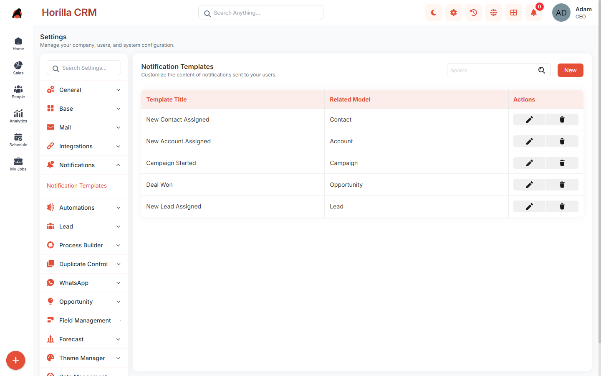
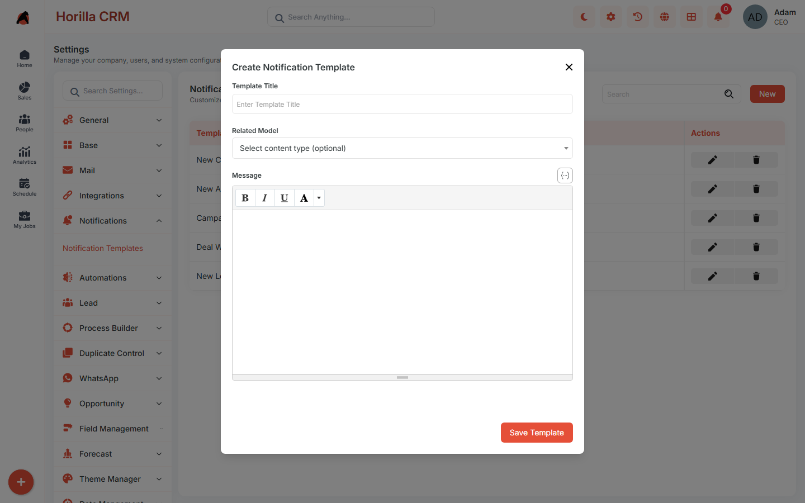
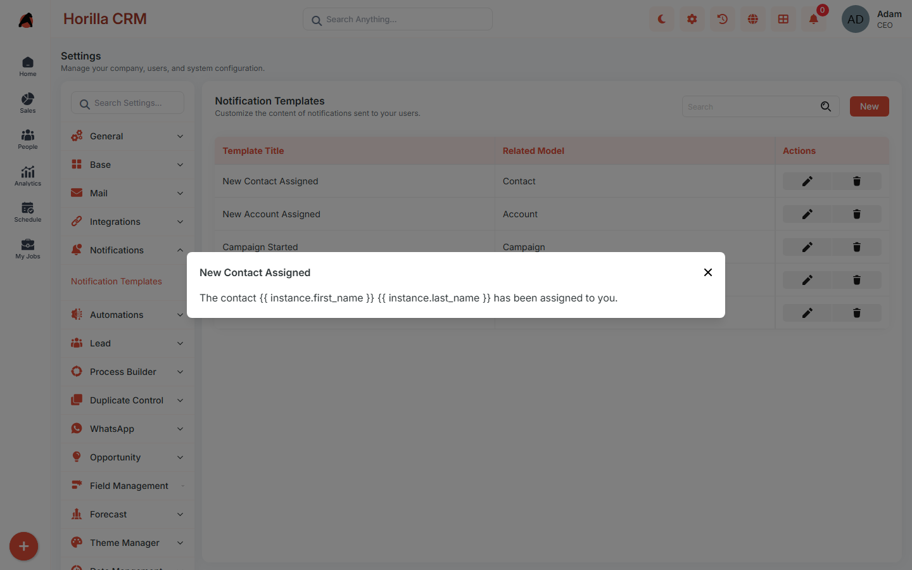

Overview
Notification Templates are reusable messages linked to a CRM model. Message Automations use them when the delivery channel is Send as Notification.
Notification Template List
The list page shows every template that has been created.

- Information shown: Template Title and Related Model.
- Row actions: Edit and Delete.
- Available actions: view templates, search templates and create a new template.
Create Notification Template
- Click New to open the Create Notification Template form.
-
Fill in the fields:
- Template Title – the name of the template.
- Related Model – the system model the template is associated with. Any available model can be selected from the list.

Template Detail View
- Clicking a Template Title opens its detail view.
- The detail view is used to reach the template's configuration and its related information.

Usage in Automation
On a message automation, choose Send as Notification. The Notification Template field then lists the templates whose related model matches the automation's module.
Expected Behaviour
- Users can create notification templates.
- Templates can be associated with any available model.
- Created templates appear on the Notification Template page.
- Clicking a template title opens its detail view.
- Templates can be selected on a message automation that sends a notification.